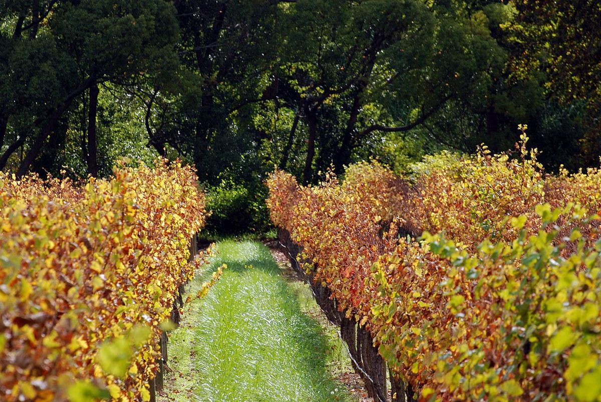

Paarl
Paarl, al norte de Stellenbosch, es uno de los distritos históricos del Cabo, dominado por las grandes cúpulas de granito que le dan nombre. Produce una amplia gama de vinos, con predominio de tintos cálidos de Syrah, Pinotage y Cabernet Sauvignon y de Chenin Blanc.

Historia
El nombre de Paarl, «perla» en neerlandés, procede de las enormes rocas de granito que se alzan sobre la ciudad y que, según la tradición, brillaban como perlas cuando les daba el sol después de la lluvia. Los colonos europeos se asentaron en el valle del río Berg a finales del siglo XVII, y la población se desarrolló en torno a una larga calle principal flanqueada por casas de estilo neerlandés del Cabo. Paarl desempeñó además un papel importante en la historia de la lengua afrikáans, que recuerda un gran monumento levantado en las laderas de la montaña.
En el siglo XX la ciudad se convirtió en un centro clave del sector vitivinícola sudafricano, ya que en ella se estableció la sede de la cooperativa KWV, fundada en 1918, que durante décadas reguló la producción y los precios del vino del país. En Paarl tuvieron también su sede grandes empresas y bodegas históricas, y durante mucho tiempo se celebró aquí la principal subasta de vinos del Cabo. Desde los años noventa, con la liberalización del sector, han surgido numerosas bodegas independientes y fincas familiares que embotellan sus propios vinos.
Clima y suelos
Paarl está más alejado del mar que Stellenbosch o Constantia, de modo que su clima mediterráneo es más cálido y seco en verano. Las diferencias de altitud y orientación, desde el fondo del valle del Berg hasta las laderas de la montaña de Paarl y del Simonsberg, permiten cultivar variedades muy distintas. Los suelos de las laderas son sobre todo de granito descompuesto, mientras que en el fondo del valle y en otras zonas predominan las areniscas de Table Mountain y los esquistos de Malmesbury. El distrito incluye circunscripciones como Simonsberg-Paarl, Voor Paardeberg y Agter Paarl.
Estilos
El calor favorece los tintos de cuerpo generoso: la Syrah, a menudo etiquetada como Shiraz, el Pinotage y el Cabernet Sauvignon dan vinos maduros, especiados y de taninos suaves, y también se cultivan variedades mediterráneas como la Garnacha, la Monastrell o la Cinsault. El Chenin Blanc es la blanca más importante, y también se elaboran Chardonnay y Viognier. La región tiene además una larga tradición de vinos generosos de tipo oporto y de brandy, herencia de la época en que la KWV orientaba la producción hacia la destilación. Muchas bodegas del distrito ofrecen catas y visitas. En los últimos años, varios productores han recuperado viñas viejas de Chenin Blanc y Cinsault en las zonas más secas del distrito, siguiendo la misma tendencia que en el vecino Swartland.